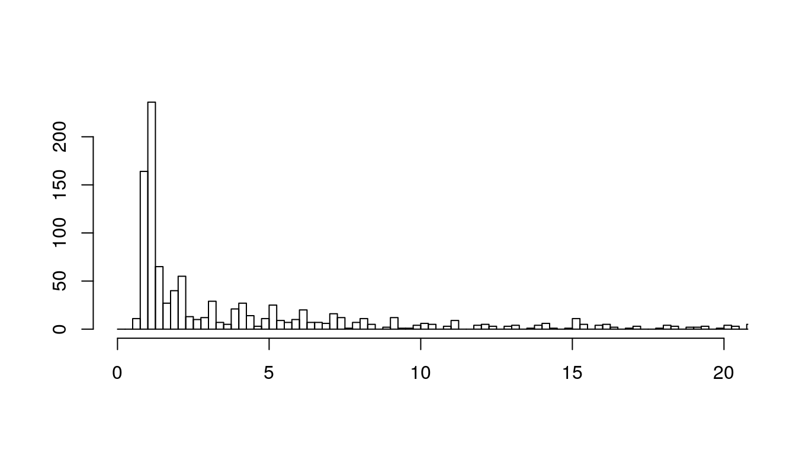

convreg-second-analysis.RmdLet’s first simulate some data.
data("PatientAdmission")
We can plot the observations:

and an overview of the raw data:
| LOS.total | Age | NumberEpisodes | RealAdmissionDate | RealSeparationDate | GenderName | Postcode | MaritalStatusNameCorr | DiseaseTypesCorr | |
|---|---|---|---|---|---|---|---|---|---|
| 62 | 0.9395833 | 57 | 1 | 2010-04-27 12:00:00 | 2010-04-28 10:33:00 | Female | 3019 | Div., Separated or Widowed | 1 |
| 687 | 1.1736111 | 87 | 1 | 2009-12-11 07:00:00 | 2009-12-12 11:10:00 | Female | 3034 | Married or De facto | 1 |
| 832 | 3.0402778 | 63 | 1 | 2010-05-10 12:02:00 | 2010-05-13 13:00:00 | Female | 3037 | Div., Separated or Widowed | 1 |
| 879 | 4.0597222 | 61 | 1 | 2010-01-27 10:49:00 | 2010-01-31 12:15:00 | Female | 3340 | Married or De facto | 3 |
| 1000 | 5.7708333 | 67 | 1 | 2010-03-20 16:50:00 | 2010-03-26 11:20:00 | Male | 3029 | Married or De facto | 3 |
## --------------------------------------------
## Convolution Regression Distribution Tests
## Assumed distribution: Nbinom and Gauss
## Tests results
##
## statistic df p.value
## Chi-2 test 48.74672 21 0.000544 ***
## G-test 76.46103 21 3.12e-08 ***
## KS test 0.03378 NA 0.170746
## ---
## Signif. codes: 0 '***' 0.001 '**' 0.01 '*' 0.05 '.' 0.1 ' ' 1Let’s run the convReg package with the true predictors.
idx.pred = c(2) dist1 = "ZIP" dist2 = "Gauss" res= BICselect(df = PatientAdmission[sample(1:nrow(PatientAdmission),100),], formula.resp = ~ LOS.total, idx.pred = idx.pred, dist1 = dist1, dist2 = dist2, quiet = F, formulas = "all") head(res)
## formula1 formula11 formula2 BIC
## 1 ~Age ~1 ~1 591.7272
## 2 ~Age ~1 ~Age 592.3391
## 3 ~1 ~1 ~Age 594.3479
## 4 ~1 ~1 ~1 594.8942
## 5 ~Age ~Age ~1 595.6784
## 6 ~1 ~Age ~1 596.7143cvRes = convreg(formula.resp = ~ LOS.total, formula.mu1 = as.formula(as.character(res$formula1[1])), formula.sigma1 = as.formula(as.character(res$formula11[1])), formula.mu2= as.formula(as.character(res$formula2[1])), method = "mle", dist1 = "ZIP", data = PatientAdmission, debug = F)
Which yields the following estimates:
## --------------------------------------------
## Convolution Regression Results
## MLE, ZIP/Gauss
## Return code 0:
## Log-Likelihood: -3173.264
## 5 free parameters
##
## Estimates: ZIP
## Estimate Std.Error Low Upp t.value p.value
## mu 1: (Intercept) 2.5315400 0.0860778 2.3628275 2.7002524 29.4099086 0e+00
## mu 1: Age 0.0049509 0.0012387 0.0025229 0.0073788 3.9966684 1e-04
## sigma 1: (Intercept) 1.6614045 0.0909747 1.4830941 1.8397148 18.2622747 0e+00
##
## Estimates: Gauss
## Estimate Std.Error Low Upp t.value p.value
## mu 2: (Intercept) 2.543999 0.087265 2.372958 2.715039 29.152401 0
## sigma 2: (Intercept) 0.837895 0.034404 0.770464 0.905326 24.354828 0
## --------------------------------------------